Lecciones de circuitos eléctricos - Volumen V
Capítulo 9
SÍMBOLOS DEL ESQUEMA DEL CIRCUITO
- Wires and connections
- Power sources
- Resistors
- Capacitors
- Inductors
- Mutual inductors
- Switches, hand actuated
- Switches, process actuated
- Switches, electrically actuated (relays)
- Connectors
- Diodes
- Transistors, bipolar
- Transistors, junction field-effect (JFET)
- Transistors, insulated-gate field-effect (IGFET or MOSFET)
- Transistors, hybrid
- Thyristors
- Integrated circuits
- Electron tubes
Wires and connections
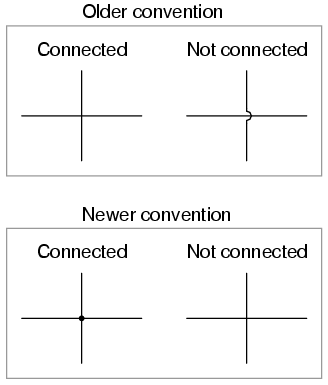
Los esquemas eléctricos más antiguos mostraban que los cables de conexión se cruzaban, mientras que los cables no conectados "saltaban" entre sí con pequeñas marcas de semicírculo. Los esquemas eléctricos más nuevos muestran que los cables de conexión se unen con un punto, mientras que los cables que no se conectan se cruzan sin ningún punto. Sin embargo, algunas personas todavía utilizan la antigua convención de conectar cables que se cruzan sin punto, lo que puede crear confusión.
Por esta razón, opto por utilizar una convención híbrida, con los cables de conexión conectados inequívocamente mediante un punto y los cables no conectados "saltando" inequívocamente uno sobre otro con una marca de semicírculo. Si bien esto puede ser mal visto por algunos, no deja lugar a errores de interpretación: en cada caso, la intención es clara e inequívoca:
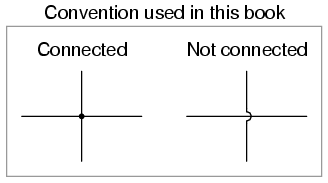
Power sources
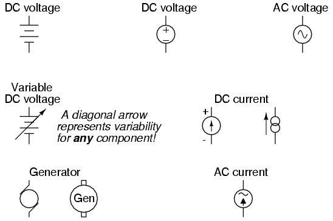
Resistors
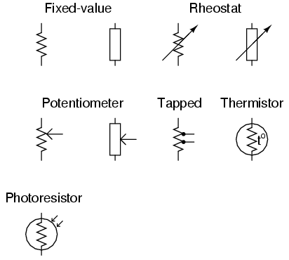
Capacitors
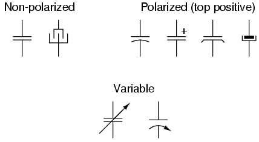
Inductors
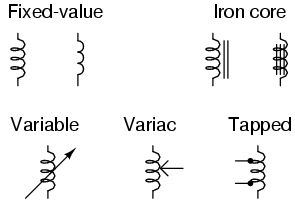
Mutual inductors
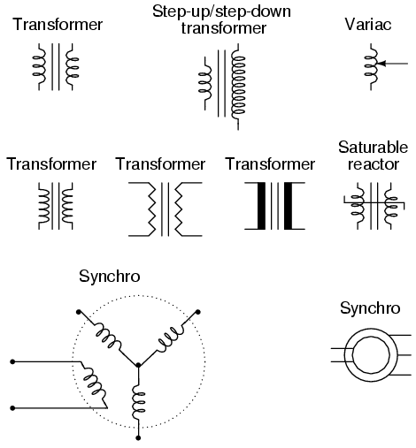
Switches, hand actuated
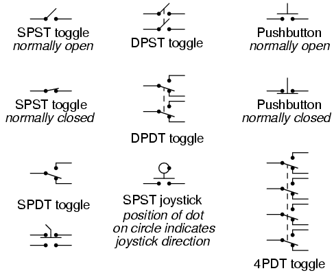
Switches, process actuated
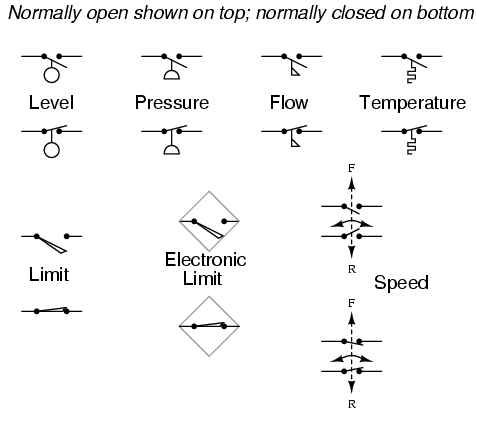
Es muy importante tener en cuenta que el estado de contacto "normal" de un interruptor accionado por proceso se refiere a su estado cuando el proceso está ausente y/o inactivo.not"normal" en el sentido de las condiciones del proceso esperadas durante la operación de rutina. Por ejemplo, unnormalmente cerradoEl interruptor de detección de flujo bajo instalado en una tubería de refrigerante se mantendrá en el estado accionado (abierto) cuando haya un flujo regular de refrigerante a través de la tubería. Si el flujo de refrigerante se detiene, el interruptor de flujo pasará a su estado "normal" (no accionado) de cerrado.
A límiteEl interruptor es aquel que se acciona por contacto con una parte móvil de la máquina. Unlímite electrónicoEl interruptor detecta el movimiento mecánico, pero lo hace utilizando luz, campos magnéticos u otros medios sin contacto.
Switches, electrically actuated (relays)
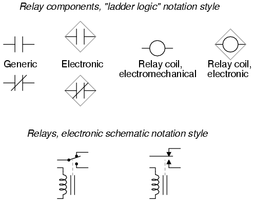
Connectors
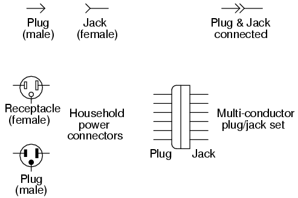
Diodes
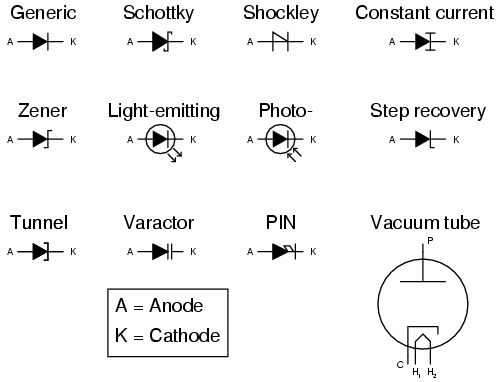
Transistors, bipolar
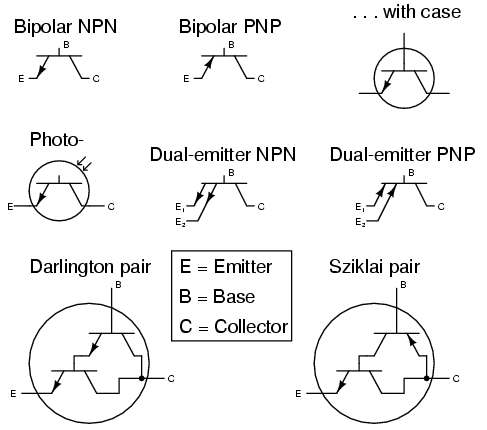
Transistors, junction field-effect (JFET)
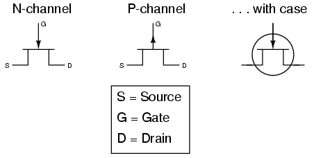
Transistors, insulated-gate field-effect (IGFET or MOSFET)
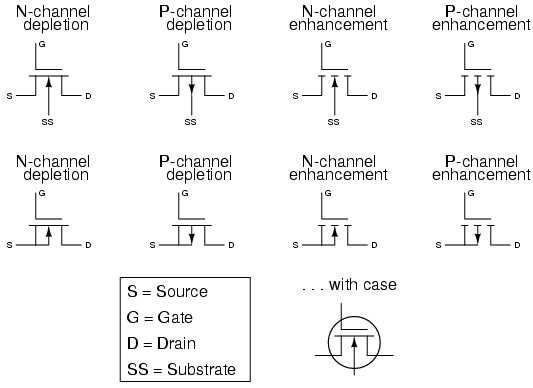
Transistors, hybrid
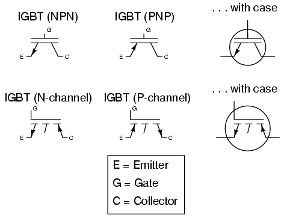
Thyristors
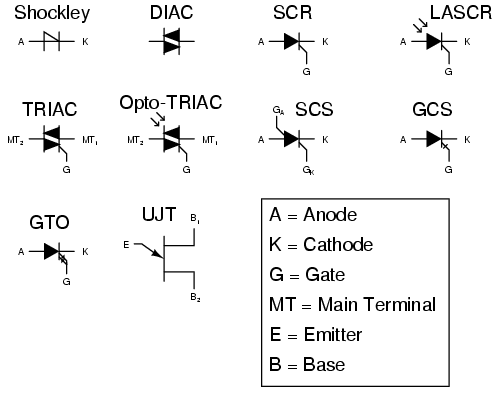
Integrated circuits
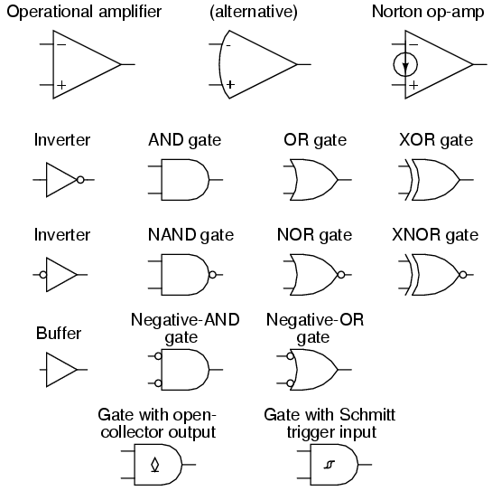
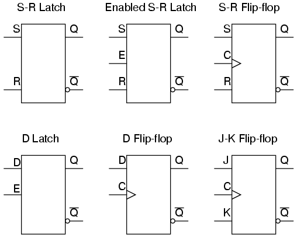
Electron tubes
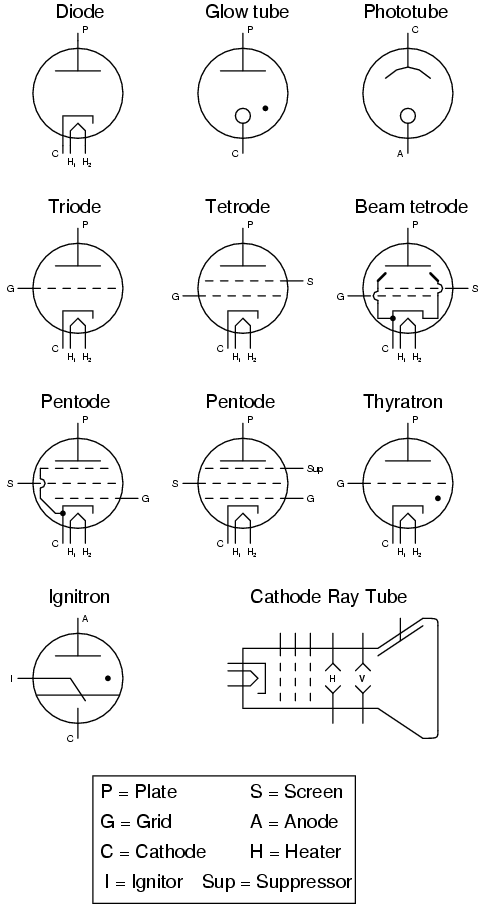
Lecciones en circuitos eléctricoscopyright (C) 2000-2023 Tony R. Kuphaldt, según los términos y condiciones delCC BY License.